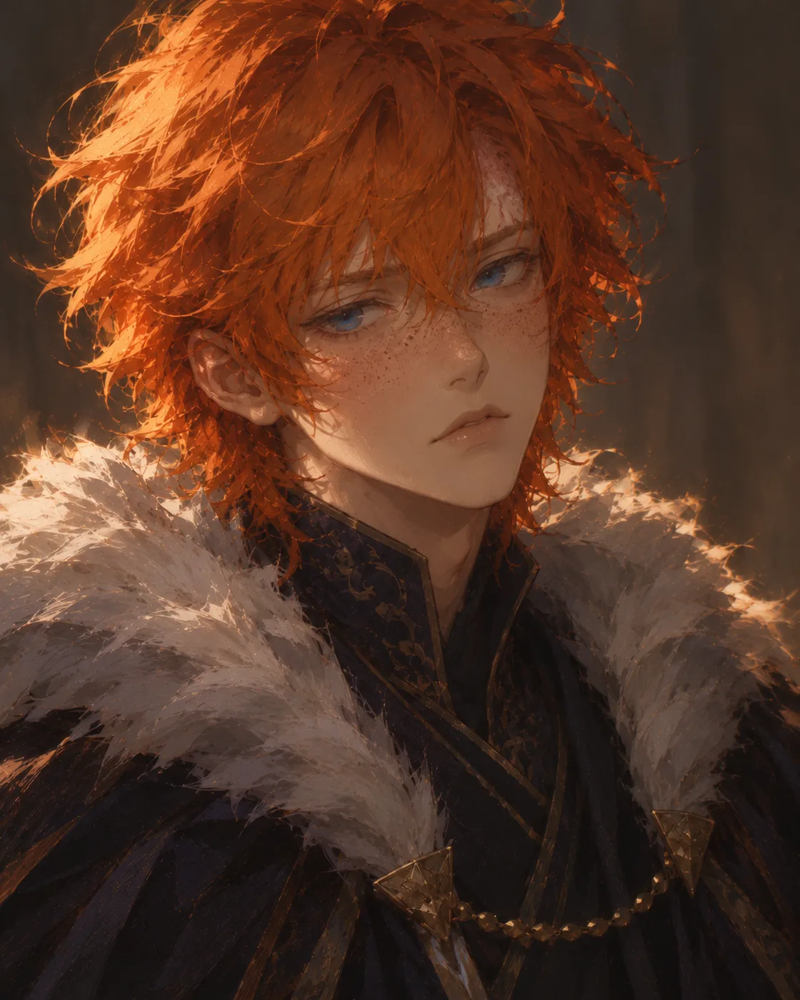
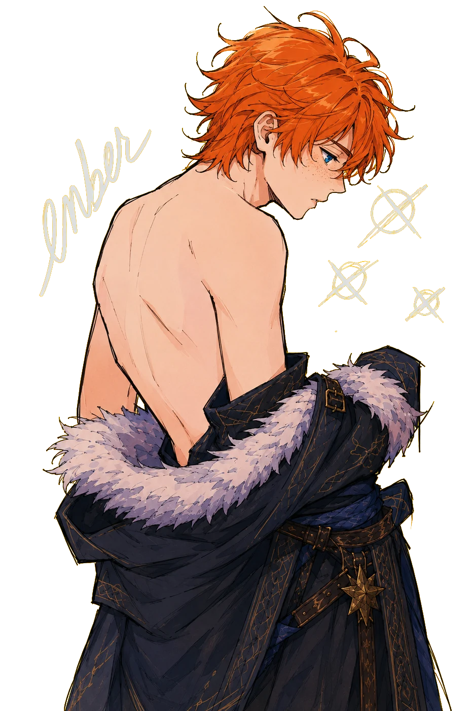
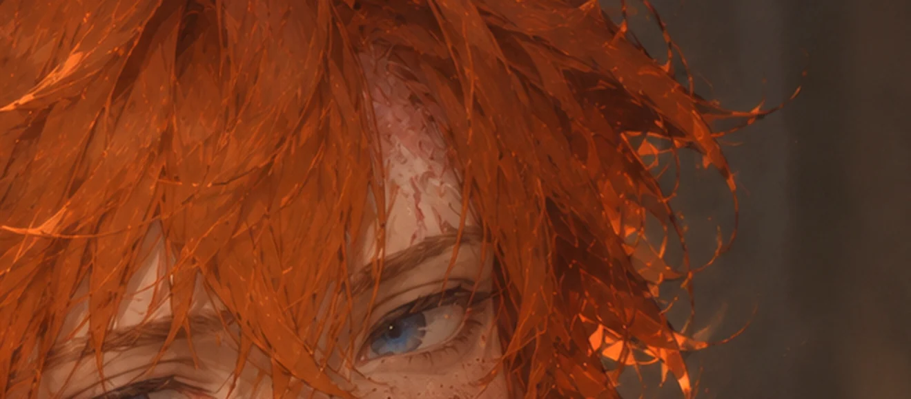
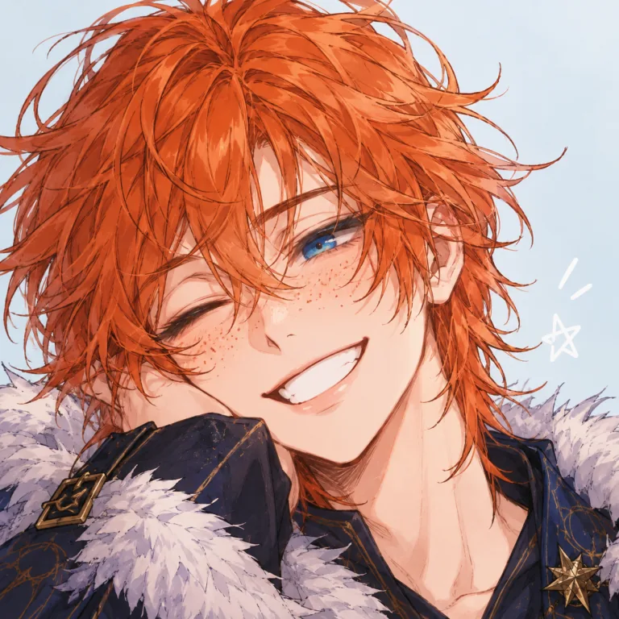

Ember
Ember não sabe onde nasceu.
Ele sabe que havia uma vila, talvez uma pequena cidade, e que em algum momento ela foi invadida. Que seus pais morreram durante essa invasão de Krovagard. O resto chegou até ele por histórias contadas muito depois, porque Ember era novo demais para guardar qualquer lembrança daquele lugar.
Era praticamente um recém-nascido quando tudo aconteceu.
As pessoas que o encontraram entre os sobreviventes foram justamente algumas das responsáveis pelo ataque. E foram elas que o criaram.
Por muito tempo, essa foi uma verdade difícil de encaixar na cabeça. Houve uma época em que ele ficou genuinamente revoltado, tentando decidir se deveria odiá-los por algo de que sequer conseguia se lembrar.
Nunca conheceu a mãe. Nunca ouviu a voz do pai. Não lembra o rosto de nenhum dos dois, nem saberia encontrar sua terra natal em um mapa.
A tragédia existe, e ele não finge o contrário. Mas deixou de permitir que ela definisse sua relação com quem realmente esteve presente.
Família virou uma questão muito mais complicada — e, ao mesmo tempo, muito mais simples — do que sangue.
Entre todas essas pessoas, ninguém foi mais importante durante a infância do que seu irmão mais velho.
Três anos de diferença. O irmão também era só uma criança quando a invasão aconteceu, e não carregava nenhuma responsabilidade pelo que os adultos fizeram. Para Ember, isso sempre importou.
Os dois cresceram juntos, mas não cresceram iguais.
O irmão
Sabia. Onde Ember precisava insistir, observar e compreender, ele simplesmente sabia o que fazer. Acreditava que o talento era dádiva divina e partiu para Salmerídia tornar-se paladino.
Ember
Pensava. Queria entender como as coisas funcionavam, por que funcionavam e, principalmente, se poderiam funcionar de outra maneira. Não tinha a mesma fé. Tinha livros, teorias e uma curiosidade difícil de desligar.
Anos antes, ele havia visto um mago lutar. Não foi a magia que prendeu sua atenção — Ember já sabia que magos existiam. Foi a maneira como aquele homem transformava conhecimento em algo prático, imediato e perigoso.
Ele começou a se perguntar por que precisaria escolher uma das duas.
Se minha espada não é o suficiente e magia sozinha não me interessa, aprenderei ambas.

Enquanto o irmão seguiu para Salmerídia, Ember tomou o caminho de Valebris.
Entrou para a Guilda Custodes muito mais interessado no acesso a conhecimento e a praticantes de magia do que em qualquer grande destino heroico. Queria descobrir se aquilo que imaginava era possível.
Encontrou uma tradição construída exatamente em torno da pergunta que o perseguia havia anos: como transformar a magia em extensão da espada, e a espada em extensão da magia.
Foi assim que começou seu caminho como Bladesinger.
Precisou reaprender boa parte do que achava que sabia sobre combate. Movimento passou a valer tanto quanto força; precisão, tanto quanto velocidade. Uma lâmina podia defender, atacar ou conduzir um encantamento. Um feitiço podia vir antes do golpe, durante o golpe, ou justamente para tornar aquele golpe desnecessário.
Pela primeira vez, havia encontrado alguma coisa que realmente parecia pertencer a ele.
E Valebris, que seria apenas o lugar onde estudaria, virou sua casa.
Expedições. Pesquisas da guilda. Conflitos que ele jamais imaginaria enfrentar quando saiu de casa. Até uma guerra contra os ratos que ameaçaram Valebris.
Algumas aventuras foram boas.
Outras deixaram marcas.
E uma delas o matou.
Ember já morreu uma vez.
Não como metáfora, nem como maneira exagerada de contar uma derrota. Seu corpo caiu. E, por circunstâncias que poucas pessoas têm a oportunidade de experimentar, ele voltou.

Hoje ele carrega parte dessa história no corpo — a marca esbranquiçada que ocupa boa parte da testa, quase sempre escondida sob a franja. E talvez carregue ainda mais coisas que não são tão fáceis de enxergar.

Ele continua sendo Ember depois disso. Ao menos é o que costuma dizer.
Sua história nunca foi sobre ser o último sobrevivente de uma vila que ele sequer consegue lembrar. Também não é sobre superar o irmão. Nem sobre descobrir quem eram seus verdadeiros pais.
Ember já passou tempo demais tentando descobrir quem deveria ser por causa de outras pessoas. A família que o criou, os pais que perdeu, o irmão que admirava, os deuses nos quais nunca acreditou da mesma maneira, o mago que viu lutar, a guilda que lhe abriu as portas, as pessoas que conheceu em Valebris, e até a morte que, por algum motivo, não conseguiu mantê-lo.
Tudo isso faz parte dele. Mas nenhuma dessas coisas decide quem ele é.
Ele encontrou a resposta muito tempo atrás, quando teve a ideia aparentemente simples de pegar tudo aquilo que sabia fazer e transformar em algo que fosse somente seu.
Magia em uma mão. Lâmina na outra.
E, depois de tudo que aconteceu, ele ainda está aqui.